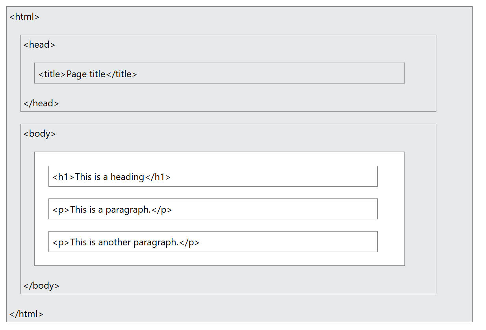

In this example, we have an <img> element with several attributes. The src attribute specifies the path to the image file, which is "image1.png". The alt attribute provides a description of the image for accessibility purposes, which is "Description of image". The width and height attributes specify the dimensions of the image in pixels, which are 500 and 300 respectively.
The <img> element is a self-closing element, meaning it does not require an end tag. It is used to embed images in a web page, and the attributes provide additional information about the image, such as its source, description, and dimensions.
There are two types of URLs that can be used in the src attribute of the <img> element:
src="https://www.example.com/images/image1.png".src="images/image1.png". This means that the image file is located in a folder called "images" that is in the same directory as the HTML document.When using a relative URL, it is important to ensure that the path to the image file is correct and that the image file is located in the specified location. If the image file cannot be found, the browser will display a broken image icon instead of the image.
The width and height attributes specify the dimensions of the image in pixels. It is important to set these attributes to ensure that the image is displayed at the desired size and that the layout of the web page is not affected by the image's natural dimensions.
When using the width and height attributes, it is important to maintain the aspect ratio of the image to prevent distortion. The aspect ratio is the ratio of the width to the height of the image. If you specify only one of the attributes (either width or height), the browser will automatically calculate the other dimension to maintain the aspect ratio.
For example, if you specify a width of 500 pixels and do not specify a height, the browser will calculate the height based on the aspect ratio of the image. If the original dimensions of the image are 1000 pixels by 600 pixels, and you specify a width of 500 pixels, the browser will calculate the height as follows:
Height = (Original Height / Original Width) * Specified Width
The alt attribute provides a description of the image for accessibility purposes. This description is used by screen readers to provide information about the image to users who are visually impaired. It is important to provide a meaningful and descriptive value for the alt attribute to ensure that all users can understand the content of the image.
In addition to accessibility, the alt attribute also serves as
a fallback in case the image cannot be loaded. If the image file is missing or cannot be displayed for any reason, the browser will display the text specified in the alt attribute instead of the image. This helps to provide context and information to users even when the image is not available.